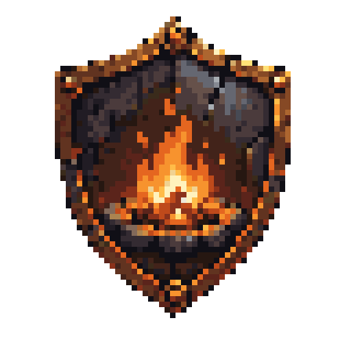

Tracefolio REPORTS & ISSUES
Tracefolio REPORTS & ISSUES
캠프 가디언수정사항메뉴 그래픽 설정 추가
검증 대기화면 모드·정수 배율 창 크기·수직 동기화·최대 FPS 설정과 자동 저장을 추가했습니다.
작업 결과
구현·저장 및 Godot 구문 검사·헤드리스 시작 실행 완료.
변경 내용
적용 내용
campaign.gd 설정창을 그래픽/소리·연출 두 열로 정리했습니다. 창/전체 화면, 640×360·1280×720·1920×1080 창 크기, 수직 동기화, 무제한·30·60·120FPS를 제공합니다. 저장 성공 시 즉시 적용하고 시작 시 다시 적용합니다. 전체 화면에서 창 크기 버튼을 비활성화하며 화면보다 큰 창은 사용 가능한 정수 배율로 줄입니다. campaign_save.gd에 기본값·유효성 검사를 추가하여 기존 저장과 호환합니다. 디자인 자산 변경과 새 지침 추가는 없습니다.
검증
Godot4.7.2 --headless --script campaign.gd --check-only 종료0, 프로젝트 --headless --quit-after 3 실행 종료0·스크립트 오류 없음. 최초 검사에서 user 로그 쓰기 오류가 있어 프로젝트 tmp 로그 경로를 지정한 시작 실행으로 확인했습니다. 별도 테스트·회귀 미실행.
남은 사항
실제 화면 배치·버튼 조작·재실행 저장 복원·전체 화면·VSync 체감은 미확인. EXE 빌드·게임 푸시·배포 미실행. 중앙 아카이브 등록 진행 중.
작업 시간
- 제안 시간: 2026-11-17 19:26:43 KST 시작,5~10분.
- 실제로 완료된 시간: 구현·구문 검사·헤드리스 시작 실행 완료 2026-11-17 19:28:45 KST,실측2분2초. 보고 등록 시간은 별도 기록.
- XERJ: 미사용 — 기존 설정창·저장 코드와 프로젝트 Godot 실행 파일을 사용했습니다.